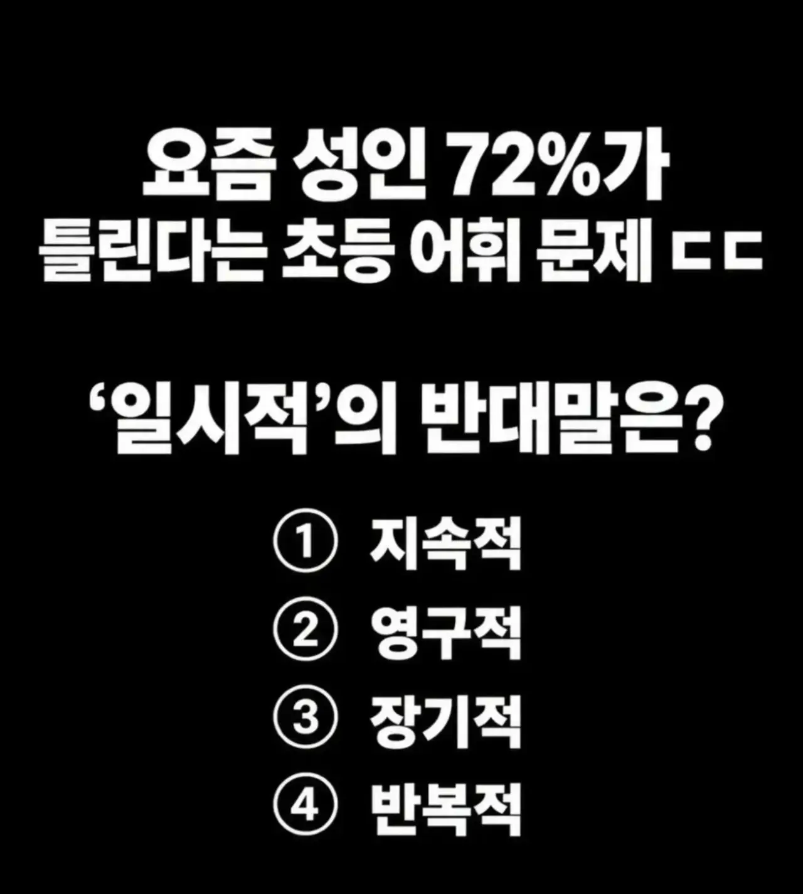
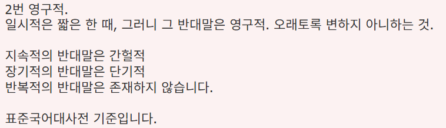

어제 올라온거보니까 귀신같이 70프로가 틀리던데 ㅋㅋ
사지선다에서 70틀리면 그냥 겐또랑 차이없는거네
찍어도 75%는 틀리잖음 ㅋㅋㅋㅋ
대부분 찍고, 몇명이 맞추면 70%정도 되겠다.
이런거 너무 어려움
오래생각해서 맞추긴 했는데
맞추면서도 확신이 안들어
오... 진짜 헷갈리네
고향 의 반대말은? 이라고
22년전 6학년때 시험문제 나온게 아직도 기억나네
지옥 써서 틀렸는데
그래서 뭐였음? 타지?
향고
백취?
타향? 객지?
타향?
정답! 고향밖
ㄴㄴ 스톱향이다
저향
오
현장마다 상황에 따라 다르게 쓰일 수 있을거 같은데, 너무 통제 하려는거 같음
의미만 대충 알아들었으면 오케이~
맞추긴 했는데 고민좀 하긴 해야되는 수준인것같은데 진짜 초딩문제 맞노?
맞췄다 ㅋㅋ
아싸 맞추긴맞췃는데 나머지가 왜틀린지 정확하게 몰랏음....
아니 반복적은 반대가 왜없음?? 1회성이라고 하면 ~적 표현이 아니라서 그런가?
나도 그게 요상하네 단발적이라고 하면 틀린건감
장기, 지속은 기간만 해당하기때문에 반대말이 있는데 반복은 횟수, 기간, 성질 다 표현할수있어서 그런듯
이걸 72%나 틀린다고?
대부분 엄밀하게 안쓰는거같은디
이런게 바로 지랄하고 자빠진 문제. 일시적이다 반댓말로 장기적이다 영구적이다 기타 등등 다양한 단어들을 자연스럽게 쓸 수 있고 그러한 단어들이 쓰이는 맥락이 얼마나 많은데. 저걸 하나로 정해도 문제를 내고 지랄. 언어는 흐름이고 변화한다는 것조차 모르는 머저리 새끼들이 기관하나 만들어서 표준어네 뭐네 지랄싼 결과가 바로 이런 어거지 문제의 탄생이지.
혹시 일시적 반대로 지속적이라고 쓰면 국립국어원에서 찾아와서 싸대기 때림?
적어도 대표 기관 하나에서는 표준 의미를 기준으로 반의어를 정해둘 수도 있는거지.
아니면 하지마?
우리는 표준어 없이 갈까?
앞으로는 표준어는 없이
띄어쓰기를 하든 말든, 되돼를 틀리든, 수박을 몽미라 부르든,
언어는 흐름이고 변화하는거니까 알아서들 쓰라고 해?
전부 다 맞는 걸로 하고?
근데 이러면 너랑 나는 소통을 어찌함?
네가 쓴 ‘단어, 맥락, 문제 등등’의 ‘기호’가 무슨 의미인지 내가 어떻게 추측을 해?
언어는 흐름이랍시고 (마치 몽미처럼) 니 멋대로 썻으면 어쩌고?
너랑 나의 공통된 의미적 기준이 없는거잖아.
그렇지 않어. 저런 개념어 자체가 중의적으로 쓰인다면 법률 문서나 개발 계획서와 같은 중의적인 의미를 피해야 되는 상황에서 심각한 혼란과 분란을 초래해.
저기 나온 용례를 메이플 버프 효과라고 가정하면 모자란 새끼들이 하나 만들어서 하는 게 아니라 네가 모자란 소리를 한 것임을 느낄 거야.
마치 수학은 사치 연산만 배우면 그 이상 아무 소용이 없다고 단정하는 반지성주의 탑골공원 할배같이 쉰내 풀풀 나는 소리를 싸지르길래 댓글 하나 달아줌.
아 1번했는데
반복적 반대말 뭐, 단발적 단속적 이런 거 아니었나
문맥에 따라 반댓말이 달라질수도 있음
아래는 문맥에 따라 반댓말이 달라질 수 있다는 예시 문장인데, 심지어 이 문장속 단어도
상황과 의도에 따라 적절한 단어가 아닐수도 있음.
① 이번 폭우는 일시적인 현상이다.
이번 폭우는 지속적인 현상이다.
② 이 시설은 일시적으로 설치되었다.
이 시설은 영구적으로 설치되었다.
③ 정부는 일시적인 경기 부양책을 마련했다.
정부는 장기적인 경기 부양책을 마련했다.
④ 이 오류는 일시적으로 발생했다.
이 오류는 반복적으로 발생했다.
저거 영구적 골랐는데 댓글에 누가 영구적 고른놈들은 나가라 ㅇㅈㄹ 하더라
뭐 이딴걸 정해놓고있노
반복성의 반대는 단발성이잖아
3번빼고 다 되는거 아닌가?
오히려 답변에있는 지속적의 반대가 간헐적이 된다는게 더 이상한거 같은데
논리적사고없이 그냥 자기들이 정한거 모르면 틀리는 문제 딱 한국 주입식교육에 어울리는문제
저거는 맥락에따라 뭘 집어넣어도 청자가 이해함
공무원 시험이나 저런거 따지겠지
반복적 장기적은 어감이 이상해서 걸렀고
1,2번이 햇갈리네
영어로 바꿔봤더니 간신히 맞췄다
반영구적
1번인줄
나도 약간 렉걸리듯 생각하다 2번 이겠거니 했는데
초딩이 간헐적 영구적 이런 말을 쓴다고?
공식이 뭘알아